Heat pump adoption in England and Wales
Implications for air quality disparities
Chem@York Conference
17 June 2026
The UK has a home heating problem
- Net zero greenhouse gas emissions by 2050 is a legal commitment
- Electricity generation has decarbonised by 82% since 1990…
- …domestic heating by only 33%
- Home heating is now the UK’s second-largest source of greenhouse gases (14.5%)
87.6%
of households in England & Wales burn fossil fuels for heat
Millions of small chemical reactors…
Combustion of natural gas doesn’t just make CO2 and water.
Atmospheric N2 is oxidised — thermal NOx forms via the Zeldovich mechanism:
\[\mathrm{O + N_2 \rightarrow NO + N}\]
\[\mathrm{N + O_2 \rightarrow NO + O}\]
Once emitted, NOx drives secondary chemistry:
- NO2 — formed via NO reaction with O3
- O3 — via NOx–VOC photochemistry
- Particulate matter — via nitrate aerosol formation
NOx is relatively short-lived in the atmosphere — so where it is emitted determines who is exposed.
We don’t all breathe the same air
- NO2
- O3
- Particulate matter
Previous research has shown that the most deprived areas are exposed to 60% more NOx emissions than the least deprived (Gray, Lewis, and Moller 2023).
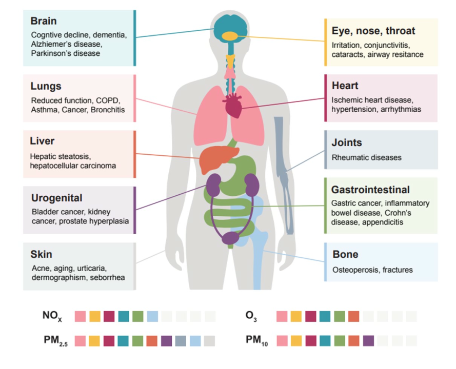
Heating is becoming a dominant urban NOx source
Since 1990:
- Energy generation NOx: −92%
- Road transport NOx: −85%
- Heating’s relative share keeps growing
72 ± 17%
of NOx emissions within the BT Tower flux footprint in central London come from heating buildings (Cliff et al. 2025)
So replacing combustion heating can help improve air quality, not just climate.
Heat pumps: electrifying heat
- Zero NOx, CO, PM or CO2 at the point of use
- Coefficients of performance of 300–500%
- Bonus co-benefit indoors: 1,777 UK deaths from CO poisoning, 2010–2020 (Office for National Statistics 2021b)
>60% of buildings in Norway have a heat pump
<1% in the UK
There are two different heat pump subsidy schemes
| Boiler Upgrade Scheme (BUS) | Energy Company Obligation (ECO4) | |
|---|---|---|
| Support | £7,500 grant | Up to full cost |
| Who qualifies? | Anyone with a valid EPC | Means-tested |
| Installations | >79,000 | >36,000 |
Targets: 600,000 installations/yr by 2028 → revised down to 450,000/yr by 2030.
Our question: the location of a heat pump is irrelevant for the climate — but not for air quality. So where are they actually going?
Today’s uptake is uneven - BUS
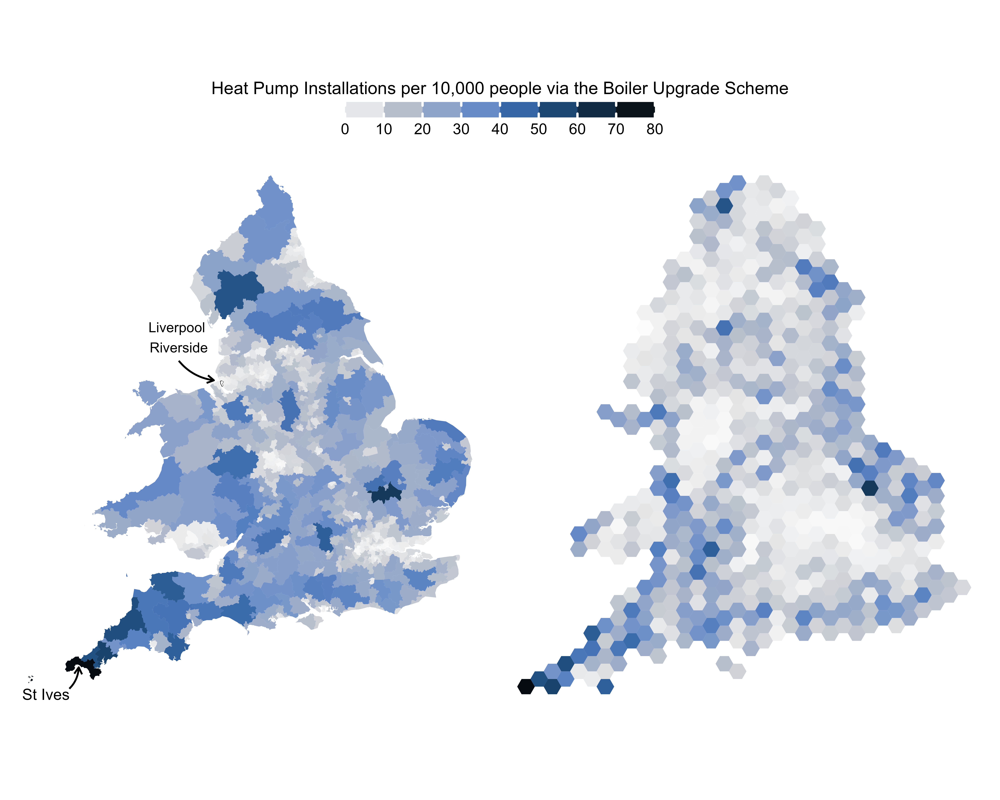
- St Ives: 77 per 10,000 people
- Liverpool Riverside: 0.6 per 10,000 people
Today’s uptake is uneven - ECO
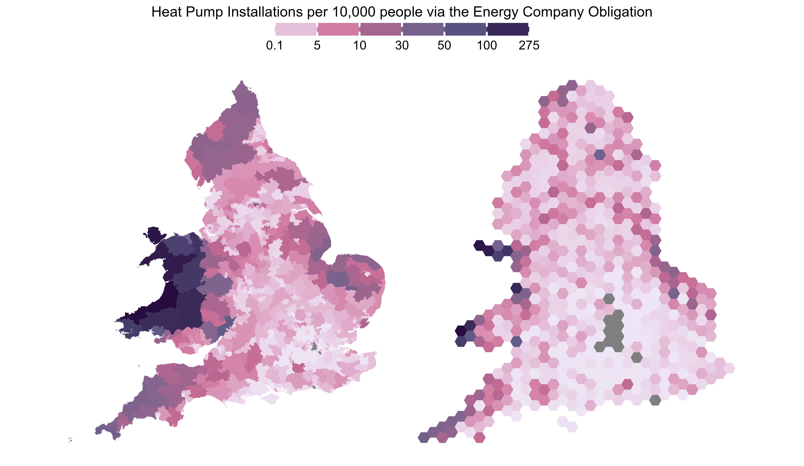
- Ceredigion Preseli : 274 per 10,000 people
- 13 constituencies with 0
Higher pollution, fewer heat pumps
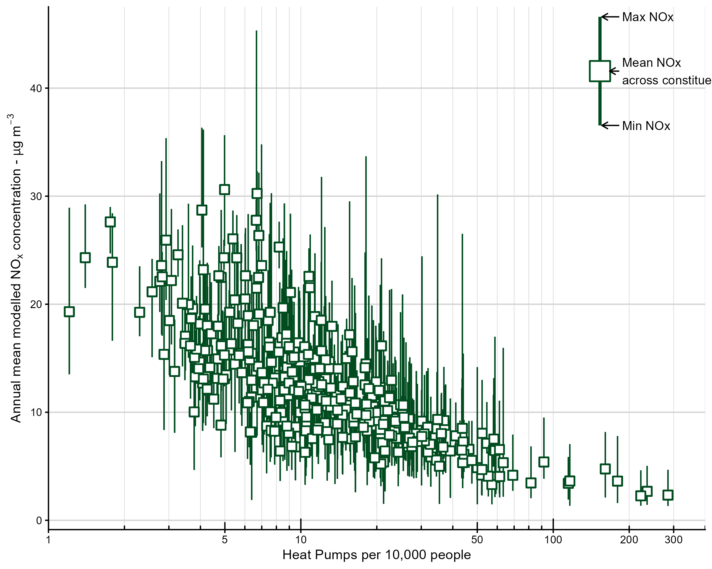
Where will heat pumps be installed?
Data: (at parliamentary constituency scale, 575 in England & Wales)
- BUS + ECO installation statistics (DESNZ 2026)
- Heat pump suitability index (Nesta 2026)
- NOx emissions (NAEI 2026)
- Modelled NOx background concentrations (DEFRA 2026)
- Deprivation (composite UK Index of Multiple Deprivation) (Parsons 2021)
Where will heat pumps be installed?
Model: allocate the Climate Change Committee’s (2025) projected installations (2025–2050) to constituencies each year with a multinomial draw with assigned probabilities under two scenarios:
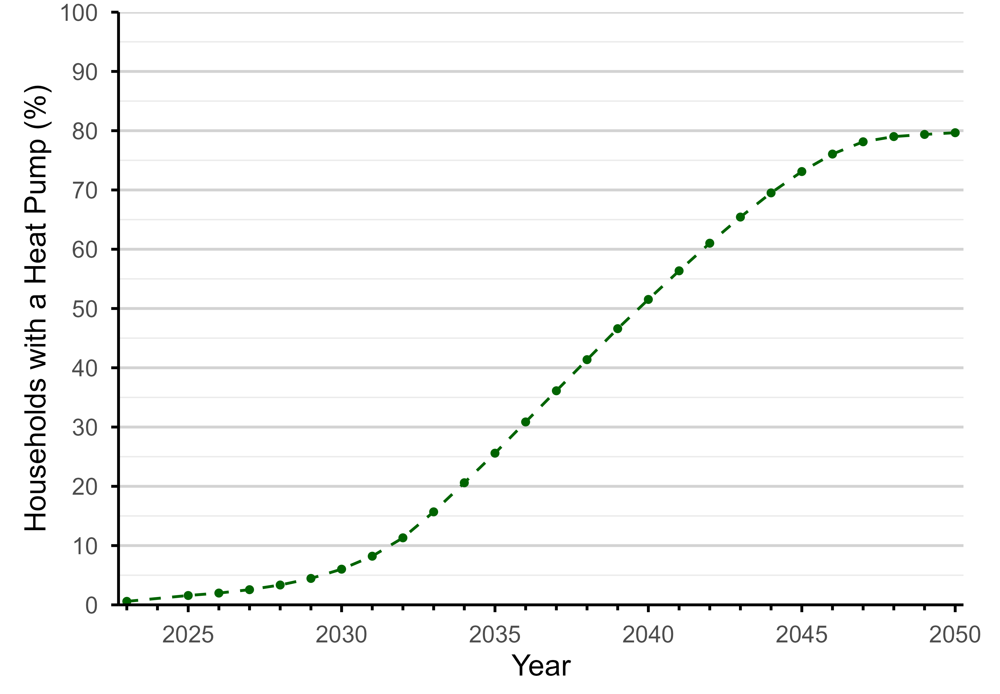
| Scenario | Heat pumps go where… |
|---|---|
| Current trends continue | …BUS + ECO uptake |
| Suitability-driven | …buildings are technically most ready |
Project forward to 2050: who gets the clean air?
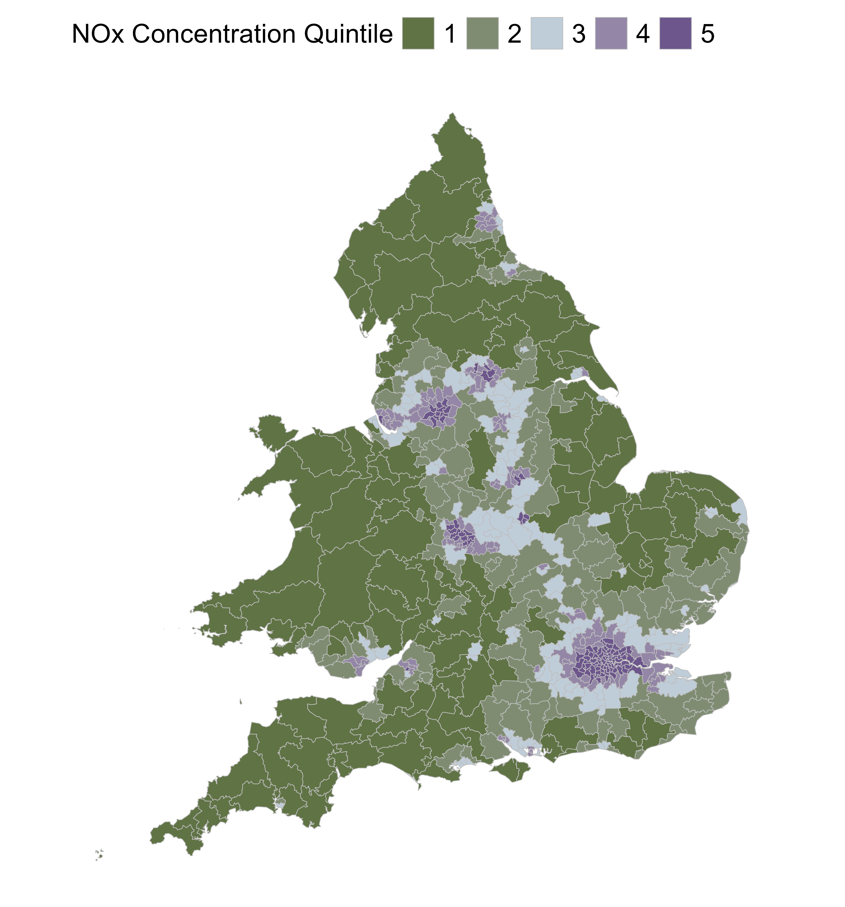
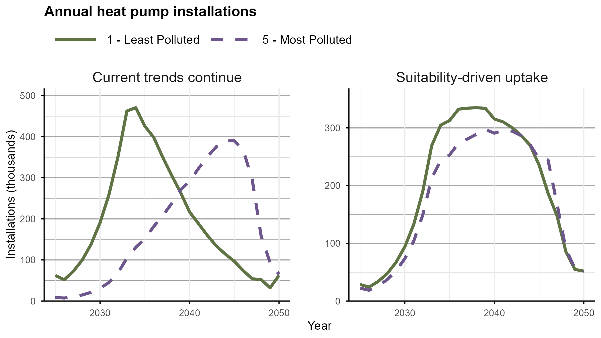
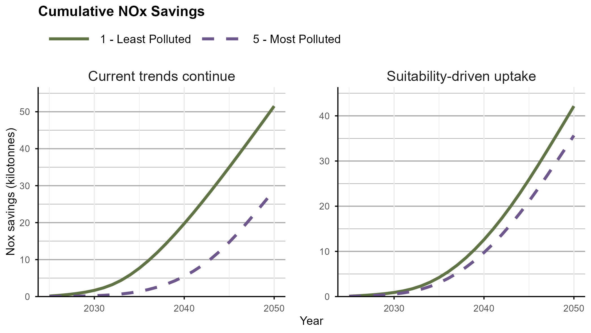
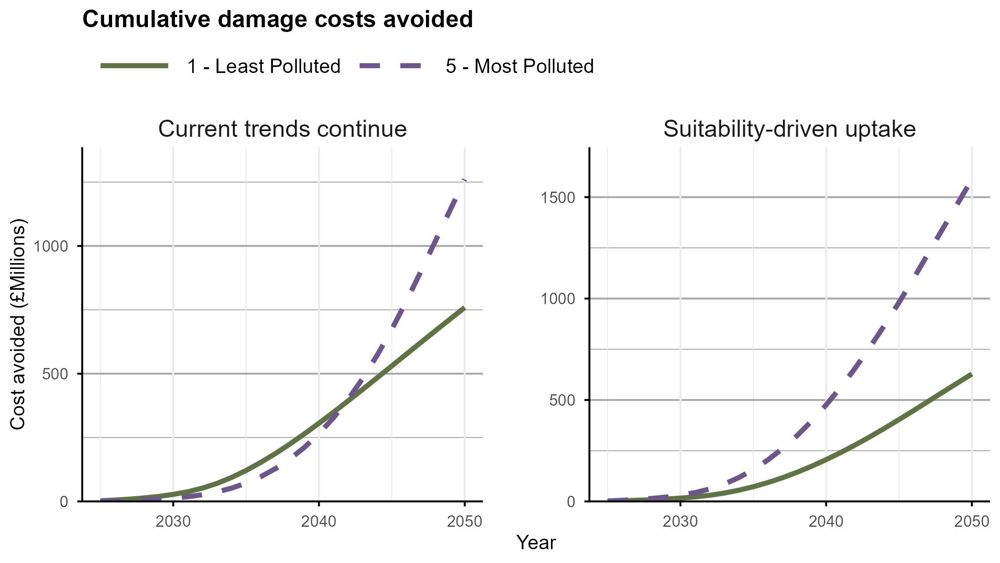
Inequality may get worse before any improvement
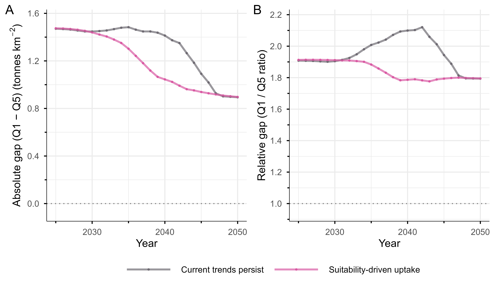
- Under current trends, relative emissions inequality between the most and least deprived stays elevated for ~20 years.
- Suitability-driven deployment reduces both absolute and relative inequality continuously.
Will any of this even happen?
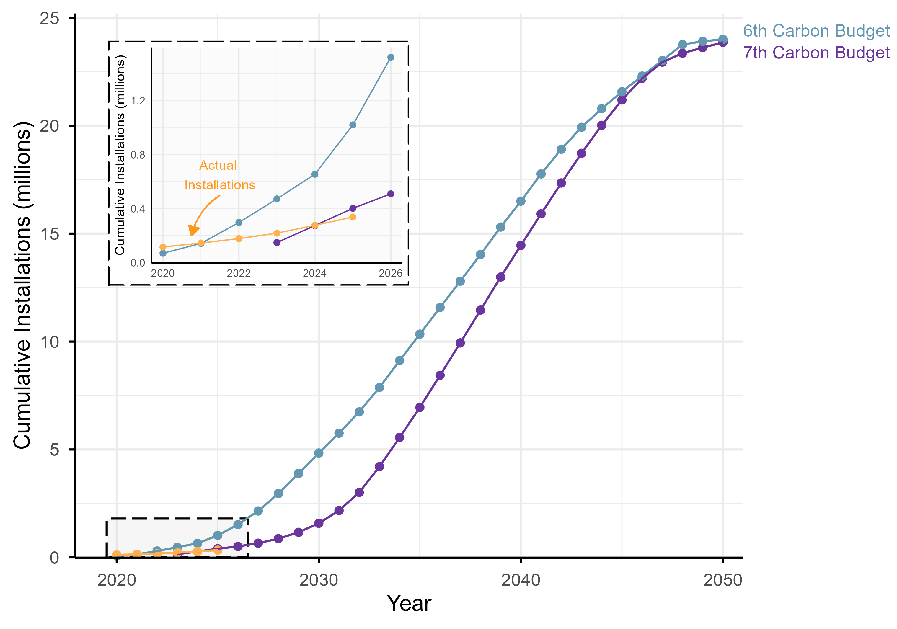
- Actual installations to 2025: ~337,000
- Seventh Carbon Budget expected: 400,000
- Sixth Carbon Budget expected: ~1,000,000
Our scenarios may be a best case — slower rollout stretches the inequality window further.
Conclusions
- Domestic boilers are becoming a dominant source of urban NOx — heat pumps no emissions at the point of use
- Climate change doesn’t care where a heat pump goes but it matters for Air quality
- Current subsidy design sends them to affluent, already-clean areas: 77% more NOx benefit.
- Targeting by air quality, deprivation and suitability delivers more health benefit from the same number of heat pumps
Thank you
Lucy Webster | WACL, University of York
Supervised by Ally Lewis & Sarah Moller.
Data & code: github.com/lucy-web-0812/heat_pumps_AQ
Any Questions?
References

Heat pumps and air quality disparities